Patent documents indicate that the U.S. and China are actively developing radical new craft that seem eerily similar to UFOs reported by Navy pilots.
The United States Secretary of Navy is listed as the assignee on several curious aviation technologies patents. These are highly unusual patents, devices and mechanisms.
Highly unusual.
These patents were generated by an aerospace engineer working at the Naval Air Warfare Center Aircraft Division (NAWCAD) headquarters in Patuxent River, Maryland.
They are very interesting.
The patents are very interesting.
One of these patents describes a “hybrid aerospace-underwater craft”. You know, one that can swim through the water as easily as it can fly through the air or jet through space.
According to the patent, it is capable of truly extraordinary feats of speed and maneuverability in air, water, and outer space. It is truly a revolutionary electromagnetic propulsion system.
Very exciting. Bordering (or perhaps, crossed over) the line between accepted scientific paradigms and God-like technology.
A scientific paradigm is a framework containing all the commonly accepted views about a subject, conventions about what direction research should take and how it should be performed. - What Is A Paradigm? - Explorable.com
To most classically educated scientists, it sounds pretty far fetched.
Imagine trying to get a patent for it!
Trying to get a patent.
A primary patent examiner at the United States Patent and Trademark Office (USPTO) thought that they were too fantastic to approve. And as such, he denied the patent applications as “too fantastical” to be considered in any degree of seriousness.
“Brawndo has what plants crave. It’s got electrolytes.”
This did not sit well with the United States Navy.
No sir. Not at all.
They absolutely and urgently, wanted these patents to be granted. They believed that it was in the best interests of “National Security”.
Washington has been incapable of coping with the great changes that have taken place in recent years, including the rise of emerging markets and developing countries, and national security has become an excuse it leans on when it wants to act on its suspicions about the economic development and technological progress of other countries. - The phony excuse of national security - CGTN
- The False Excuse of National Security – American Thinker
- The phony excuse of national security – CCTV News
- The phony excuse of national security – CGTN
- ‘National Security’ a Lousy Excuse for Lousy Trade
- Privacy, National Security, and Mass Surveillance
The Chief Technical Officer (CTO) of the Naval Aviation Enterprise personally wrote a letter addressed to the examiner. He claimed that the U.S. needs the patent. As the Chinese are already “investing significantly” in these aerospace technologies.
His argument is that the patents were necessary for “American Defense superiority”.
UFO’s? No way!
The descriptions on the patents sound very, very similar to the UFOs reported by Navy pilots.
They do.
Why is that, you suppose?
Well, everyone know that there’s no such things as “little green men”, extraterrestrials or “star people”. That’s just nonsense for school children. Right?
Right?
And since the USA would never keep secrets and technologies hidden from the American people, we know that they would tell us about extraterrestrials and their technologies. They would be open and transparent.
- Open and transparent is the way America always does things. Right?
- That’s what it’s like to live within the best democracy in the history of the world. Right?
- The government is open and has no secrets. Don’t you know!
So, there are no extraterrestrials at all. After all, President Obama got on the Ellen DeGeneres show and said that to an audience of millions. Millions!
It must be the dastardly Chinese or Russians!
Since it cannot be extraterrestrials that are using these technologies, then it MUST be those terrible Chinese or Russians! Right?
Damn Commies!
This raises the question, are the Chinese developing (or even already flying craft) leveraging similar advanced technology and is the American Navy now scrambling to catch up?
I rather doubt that the Chinese are anywhere near this level of development, and I am a pretty strong supporter of the Chinese. Yes, it is true that many Chinese cities look like something out of the "The Jetsons", but this level of technology is centuries more advanced than what is publicly available in peer review journals. -Metallicman
And I am not alone…
I deeply doubt that the Navy is playing catch-up to what the Chinese have secret developed. Tingly and Rogoway do not appear to be aware of the many insiders who have come forward with their startling testimonies about U.S. reverse engineering programs involving captured flying saucer technologies that go back as far back as the 1940s. -EXOpolitics
Why not reverse engineering of extraterrestrial craft?
Why not?
I mean, you have to be a rather retarded block head not to realize that the universe is a very big place, and time goes on a long long way. To think that the world, as we know it, and the beliefs that we hold are absolutely fundamentally correct, is absolute lunacy.
Extraterrestrials exist.
The Untied States government knows about them, and has treaties with numerous entities. They have been reverse engineering their technologies for decades now, and it’s only a matter of time when the research will pay off with some kind of hybrid developmental vehicles.
It’s only a matter of time.
Maybe like now.
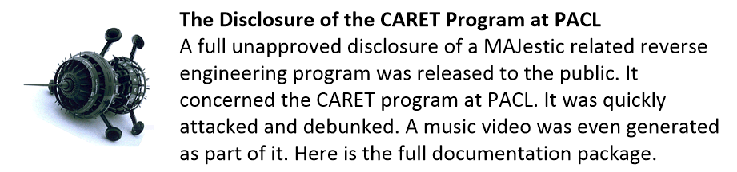
And if the reverse engineering has reached a point where actual prototypes can be manufactured, perhaps it would also be a good time to secure intellectual patents protections. Right?
Right?
The Wondrous Inventions Of Dr. Salvatore Cezar Pais
Maybe a look at some of these patents might give us some insight.
Maybe we can take a peek at the strange aerospace patents filed by Salvatore Cezar Pais, an aerospace engineer at NAWCAD.
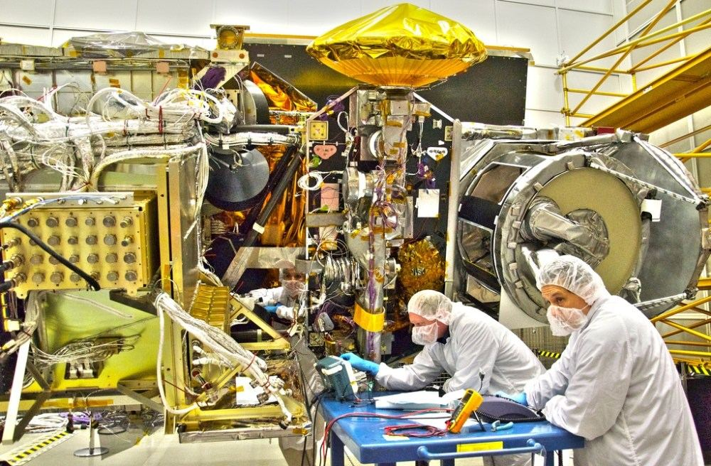
Let it be well understood that there are some supplemental documents in the USPTO’s databases that imply that Navy leadership knows that these technologies are actually feasible.
Throughout the supplemental documents are references to actual validation tests and observations. All of which point to the idea that these parents are not just “ideas of merit”, but rather “technical protection documents for technology that has been proven to work”.
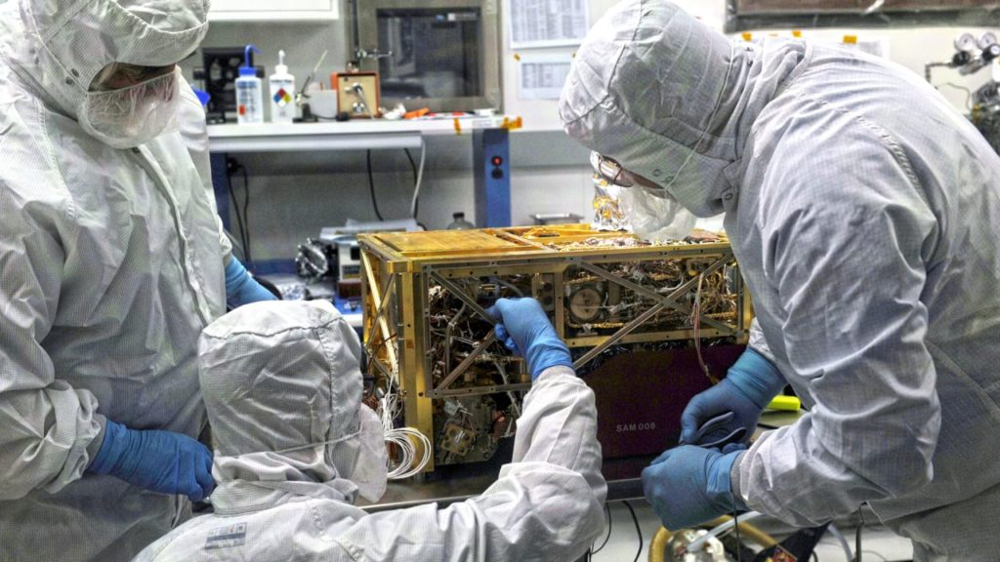
Little information can be found about Salvatore Cezar Pais; he has virtually no web presence.
What is known is that he received a PhD in Mechanical and Aerospace Engineering from Case Western Reserve University in 1999. We also know that he currently works as an aerospace engineer for NAWCAD at Naval Air Station Patuxent River in Maryland. This facility is one of the Navy’s top aircraft test bases.
Pais has published several articles and presented papers at American Institute of Aeronautics and Astronautics conferences over the years.
In those papers he covers his work in electromagnetic propulsion, and revolutionary room temperature superconductors. Not to overlook such topics like his PhD dissertation: “Bubble generation under reduced gravity conditions for both co-flow and cross-flow configurations.”
NASA helped fund his dissertation.
- A copy of his dissertation is here.
- A full list of his publications can be found here.
The Navy’s Patented Hybrid Underwater Aerospace Craft
Pais is named as the inventor on four separate patents for which the U.S. Navy is the assignee:
- A curiously-shaped “High Frequency Gravitational Wave Generator;”
- A room temperature superconductor;
- An electromagnetic ‘force field’ generator that could deflect asteroids;
- And “Craft Using An Inertial Mass Reduction Device.”
While all are pretty outlandish-sounding, the last one is the one that the Chief Technical Officer of the Naval Aviation Enterprise personally vouched for.
This is the patent that he claimed that the Chinese are already developing similar capabilities.
The patent was first applied for on April 28, 2016, over a decade after the Nimitz Carrier Strike Group encountered strange Tic Tac-shaped aircraft. It is also nearly a year after Navy pilots across multiple squadrons flying out of Naval Air Station Oceana and NAS Norfolk experienced a string of bizarre encounters with unidentified aircraft. Some of which, like the Tic Tac UFO, seemed to possess exotic performance capabilities.
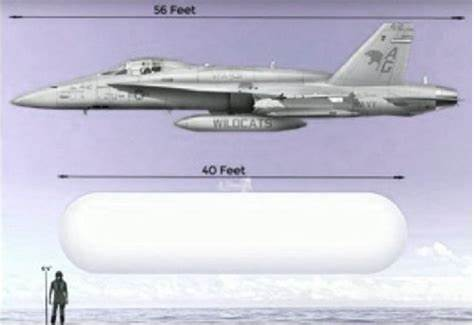
The hybrid aerospace-underwater craft in Pais’ patent, meanwhile, is described as being capable of incredible feats of speed and maneuverability. It can fly equally well in air, water, or space without leaving a heat signature.
This is possible, Pais claims in the patent, because the craft is able to “engineer the fabric of our reality at the most fundamental level” by exploiting the laws of physics.
“…engineer the fabric of our reality at the most fundamental level”
The concept is fairly simple, although the engineering required to make it a reality is another issue all together.
The basic theory…
All matter contains energy on the quantum level.
All particles are ripples in fields and have energy; photons are not special in this regard. Photons are stuff; energy is not. The stuff of the universe is all made from fields (the basic ingredients of the universe) and their particles. At least this is the post-1973 viewpoint. - Matter and Energy: A False Dichotomy
By theoretically creating its own incredibly dense and polarized energy field, the hybrid craft is claimed to be able to create a quantum ‘vacuum’ around itself. This vacuum allows it to repel any air or water molecules with which it interacts.
Thus, the craft can essentially ignore aerodynamic or hydrodynamic forces, or so it is claimed in the patent.
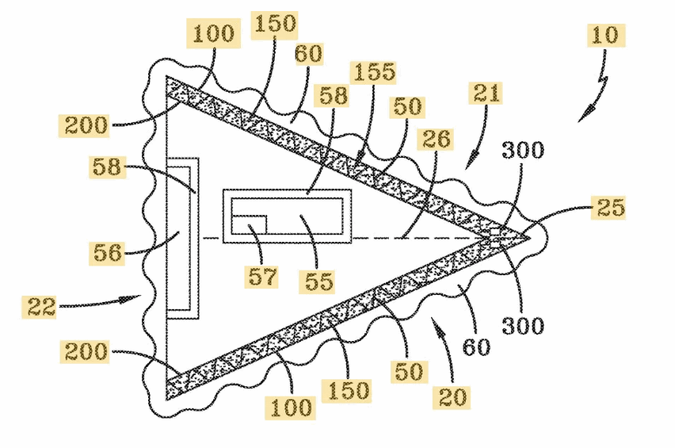
Throughout his patents and publications describing the hybrid aerospace underwater craft (HAUC), Pais writes that the radical feats of speed and maneuverability (of which the craft is supposedly capable of) can be achieved by coupling “high-frequency axial spin” or “accelerated vibration” with “high-frequency vibrations of electrically charged systems.”
High speeds are possible with [1] High frequency axial spin (or vibration) and [2] high frequency vibrations of electrically charged systems.
In other words, if you can [1] create a room temperature superconductor capable of storing an incredibly high amount of energy and [2] get the energy field created by that superconductor moving at incredibly high speeds around or within the craft, then…
… you can create a polarized energy vacuum around it.
This then, allows it to basically ignore the energy of the air or water around it, thereby removing its own inertia and mass from the equation.
The application of the theory…
In his most recent publication, Pais describes the hybrid aerospace / underwater craft as a roughly cone-shaped vehicle that would appear round from the front or rear.
“the HAUC is conical in configuration, with an elliptical cross-section, similar in geometry to a hypersonic glide vehicle / dart.”
Interestingly enough, the descriptions of the craft in several of Pais’ publications and even the patent for “Craft using an inertial mass reduction device” include room for a crew compartment shielded by a Faraday cage.
Shortly after the patent for the hybrid craft was approved in 2018, Pais presented another related paper, “Room Temperature Superconducting System for Use on a Hybrid Aerospace Undersea Craft” .
He presented it at the 2019 American Institute of Aeronautics and Astronautics SciTech Forum in San Diego on January 2019.
Man, with all these papers of a great diversity of subject matter and content, you would think this guy is either a genius, or is the designated patsy for technical patent assignments for IP.
In the paper, Pais writes…
"the achievement of room temperature superconductivity (RTSC) represents a highly disruptive technology, capable of a total paradigm change in Science and Technology,” and adds that its “military and commercial value is considerable."
The capabilities described in the paper should certainly sound familiar to anyone who’s been following the Navy UFO stories over the last several years:
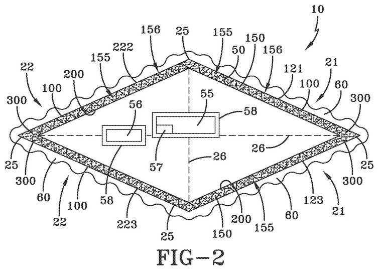
From the paper…
It is possible to envision hybrid aerospace-undersea craft (HAUC), which can function as a submersible craft capable of extreme underwater speeds (lack of water-skin friction) and enhanced aerial/underwater stealth capabilities (non-linear scattering of RF and sonar signals). This hybrid craft would move with great ease through the air/space/water mediums, by being enclosed in a Vacuum/plasma bubble/sheath, due to the coupled effects of EM field-induced air/water particles repulsion and Vacuum energy polarization.
Dr. Brian Collett provides his opinions
Dr. Brian Collett, is a Hamilton College physics chair who teaches courses in electromagnetic theory and quantum physics. He has some thoughts on these patents and what they might imply.
Collett stated that patents and peer-reviewed articles about theoretical physics are one thing, however the descriptions of the HAUC and the claims in Pais’ research…
"...bear no more resemblance to quantum physics as I understand it than does ‘The Force’ from Star Wars."
Moreover, Collett adds,
"a working room temperature superconductor would have far more radical uses that are actually within the bounds of possibility"
…than a hybrid craft that can theoretically create a quantum vacuum around itself.
Other physicists have stated the same thing – although most of them refused to go anywhere near on the record concerning the hybrid craft patent based on how outlandish it seems.
But…
But…
But, why then would the Naval Aviation Enterprise CTO personally vouch for this patent to the USPTO?
Is it possible?
Just because something is patented doesn’t mean it’s currently in production or even possible.
Private entities and the U.S. government both regularly patent forward-looking technologies to ensure that they own the rights to them when or if they’re ever fully realized. The patent for the hybrid craft is set to expire on September 28, 2036.
That being said, the unorthodox circumstances surrounding the approval of this patent have us wondering why the Chief Technology Officer of the U.S. Naval Aviation Enterprise, Dr. James Sheehy, personally vouched for the legitimacy of this beyond-revolutionary aerospace technology in the Navy’s appeal to the USPTO.
Take important note. Sheehy assured the patent examiner in charge of this application that the aircraft propulsion method described in the patent is indeed possible or will be soon based on experiments and tests NAWCAD has already conducted.
Never the less, the application was initially rejected by Patent Examiner Philip Bonzell on the grounds that “there is no such thing as a ‘repulsive EM energy field,'”
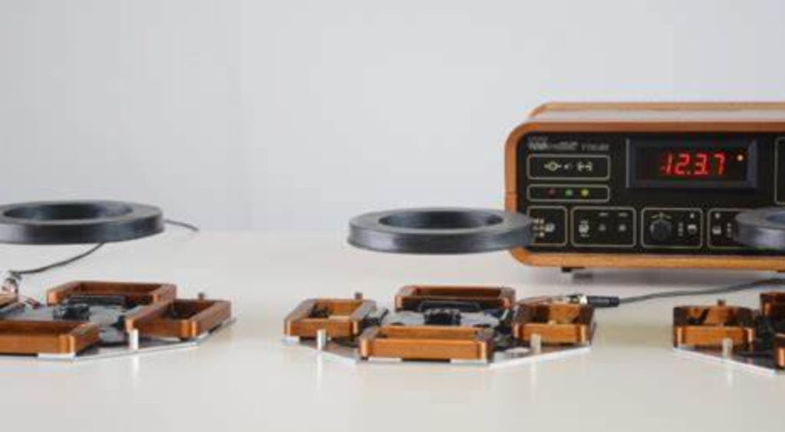
Further, he argued it was outrageous. Here;
"when referring to the specifications as to ascertain about the microwave emitters needed in this system it is seen that for a high energy electromagnetic field to polarize a quantum vacuum as claimed it would take 10^9 [T]eslas and 10^18 V/m."
That’s roughly the equivalent to the magnetic strength generated by most magnetars and more electricity than what is produced by nuclear reactors.
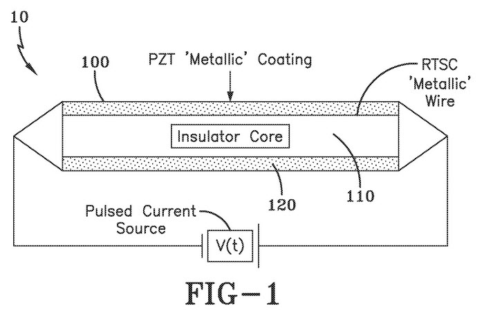
Obviously, the examiner believed it’s impossible with today’s technology. He believed that it was impossible to create the insane amount of energy needed to generate the EM field. And this is what would be required to propel this craft in the manner described in the patent application.
More New Technology…
The implication is that another type of new technology would be required.
Well, to do A, you need to have B, C, and D. Well, imagine that! All these things are suddenly available simultaneously for patent. Wow oh wow! Either an army or geniuses have been toiling away in the dark, in secret, and being fed through their cages for decades, or we have been secretly reverse engineering very advanced technologies based on principle that make the internal combustion engine, electronics, and rocket engines look like "Romper room play toys".
What would be needed to generate such amounts of energy is a revolutionary room temperature superconductor . One, mind you, already described for in one of Pais’ other patents for which the Navy is listed as the assignee.
Hum…
Superconductors are materials that can conduct electricity with zero resistance, meaning the electrical currents carried through them never degrade or dissipate like they do in metals, such as copper or silver.
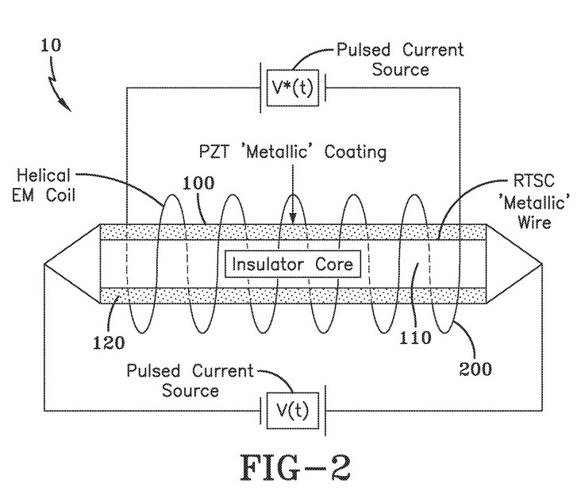
Superconductors also create their own repulsive magnetic fields when placed near magnets, enabling applications like the levitating Maglev trains currently floating at high-speed in Japan and China.
Most superconductors today require extremely low temperatures to operate, however, making them impractical for most uses outside of laboratories or large scale industrial applications. Room temperature superconductors for years have been something of a "Holy Grail" of science for engineers, because, once realized, they would open the doors for incredible new forms of power transmission and storage, electric motors, and magnetic levitation devices.
According to documents available to the public at the USPTO website, the Patent Office rejected Pais’ and the Navy’s application for this craft on March 30, 2018.
After it was rejected, the NAWCAD’s patent attorney, Mark O. Glut, appealed the decision and submitted further documentation to ensure the patent office that this craft is indeed “enabled,” meaning it can actually be built and can perform as described in the patent.
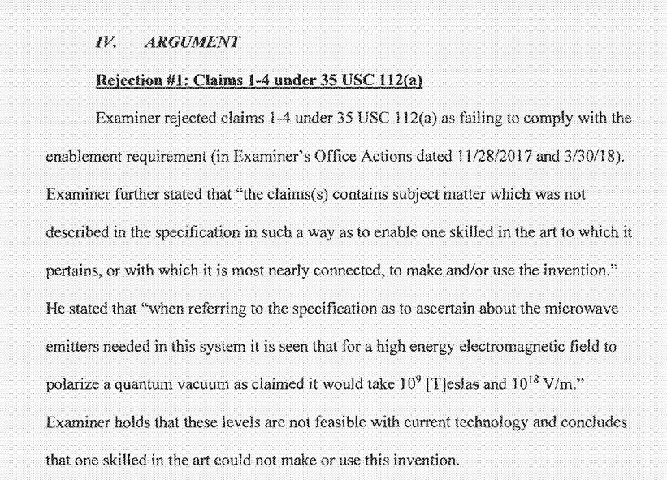
This craft has already been built…
One of the most compelling items in the collection of appeal documents is the letter accompanying the final appeal written CTO Sheehy concerning the U.S. Patent Office’s rejection of “Craft Using an Inertial Mass Reduction Device.”
This craft is indeed “enabled,” meaning it can actually be built and can perform as described in the patent.
In the letter dated 15 December 2017, Dr. Sheehy claims that Salvatore Pais has “already begun a series of experiments to design and demonstrate advanced High energy Density/High Power propulsion systems” that are described in the patent.
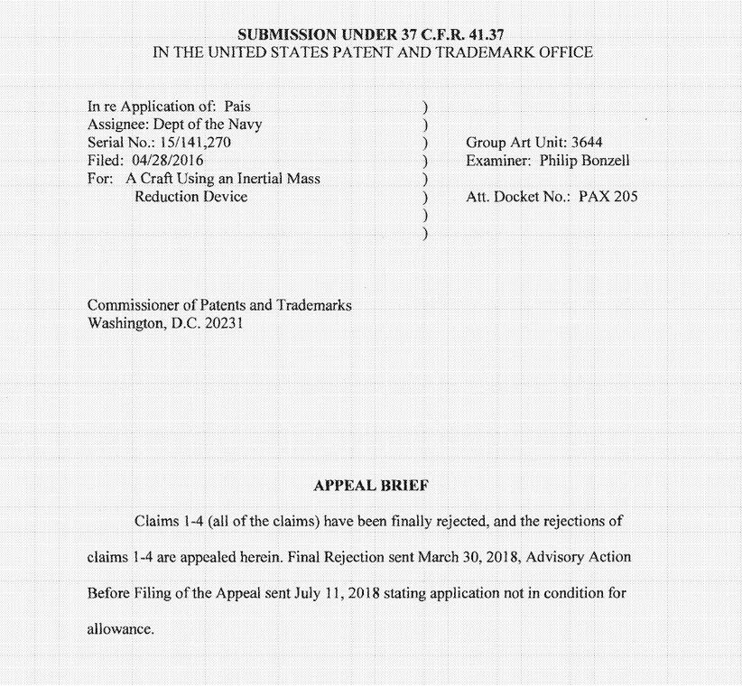
Furthermore, Sheehy claims that…
"the realization of this result demonstrates that this patent documents the future state of the possible and moves propulsion technology beyond gas dynamic systems to field-induced propulsion based hybrid aerospace-undersea craft."
Have a look at the letter yourself:
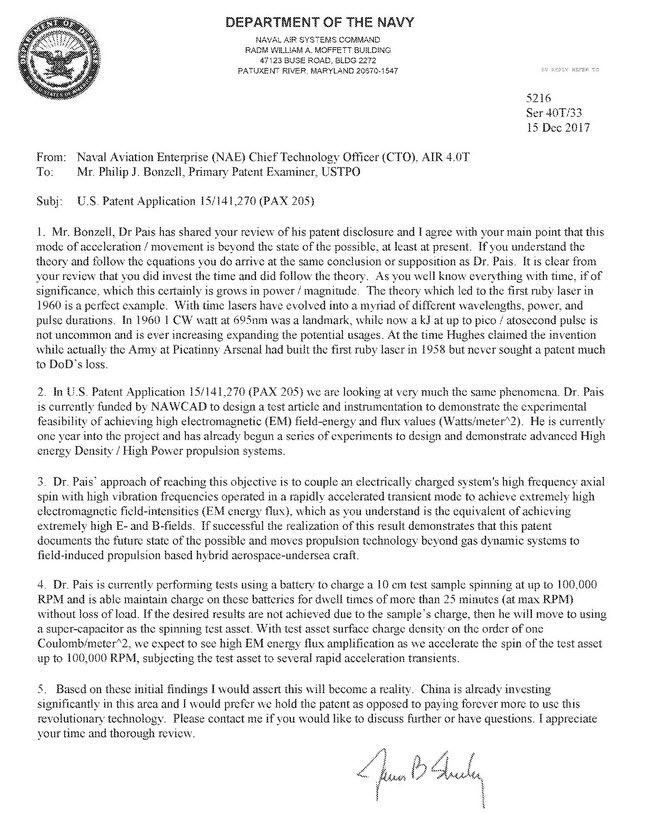
It’s important to note that Sheehy doesn’t go so far as to say on the record that the Navy currently possesses this technology and instead notified Patent Examiner Philip Bonzell that he agrees that…
"this mode of acceleration/movement is beyond the state of the possible, at least at present."
Sheehy, of course, adds that…
"China is already investing significantly in this area" and "would prefer we [the U.S.] hold the patent as opposed to paying forever more to use this revolutionary technology" as he asserts "this will become a reality."
Remarkably, it seems to boil down to the ol’ “we must not allow an Inertial Mass Reduction Device gap!”
Heh. Heh.
Approved patent.
Perhaps because of that threat from the Chinese looming, the USPTO finally issued a notice of allowance for “Craft Using an Inertial Mass Reduction Device” to the Department of the Navy on October 31, 2018, at a fee of $1,000 USD.
No reason was given for why the patent was eventually approved.
It’s important to note, as well, that U.S. patent law ends at America’s borders. The Navy can patent anything it wants to, but those patents would not necessarily keep a foreign country from developing and patenting similar technologies.
The Dawn Of Electromagnetic Propulsion?
Normally, I would agree with others that these patents are likely just the Navy ensuring that when or if this technology does become available, the U.S. will be able to control it.
However, these are not normal times.
Thanks to To the Stars Academy (TTSA), the Department of Defense, and the media at large, the Navy pilots have witnessed aircraft behaving exactly like the craft these patents describe. Additionally, some of the pilots’ visual descriptions of those anomalous aircraft even seem to be uncannily similar to the drawings of the aircraft as depicted in Pais’ patents.
One of those patents depicts a curiously and distinctly shaped gravitational wave generator that resembles the Tic Tac-shaped object reported by retired U.S. Navy Commander David Fravor and other NimitzCarrier Strike Group pilots in encounters that took place in 2004 off the Baja Coast.
The so called “Tic Tac” encounter.
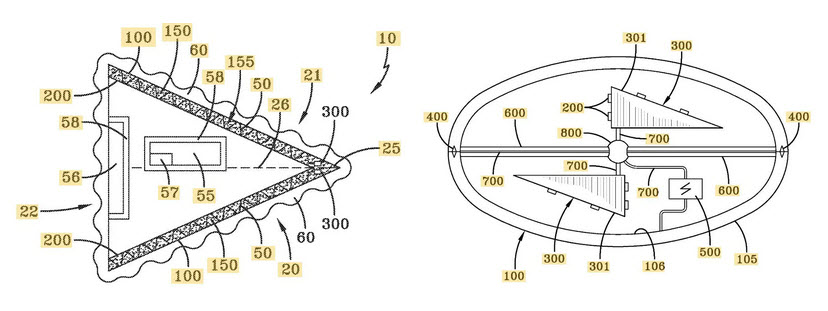
In regards to claims that these patents may simply be speculative “math theory,” as the patent examiner called them in one of the rejections. Never the less, it’s important to remember that scientific and engineering research sometimes reach tipping points. Tripping points in which incremental progress made over decades suddenly culminates in large paradigm shifts. Shifts, mind you, that bring the theoretical into the realm of the possible. (Of course, massive bursts of associated funding also can really help, of course.)
The patents appear to draw upon established theoretical research. Included in the Navy’s patent appeals and Pais’ most recent publication are references to decades’ worth of peer-reviewed research in room temperature superconductors and macroscopic quantum effects. Additionally, there are even notated copies of several studies related to Pais’ research.
In the publication, Pais also thanks Naval Aviation Enterprise CTO Dr. James Sheehy…
"for the many hours of thought-provoking discussions on the concept at hand."
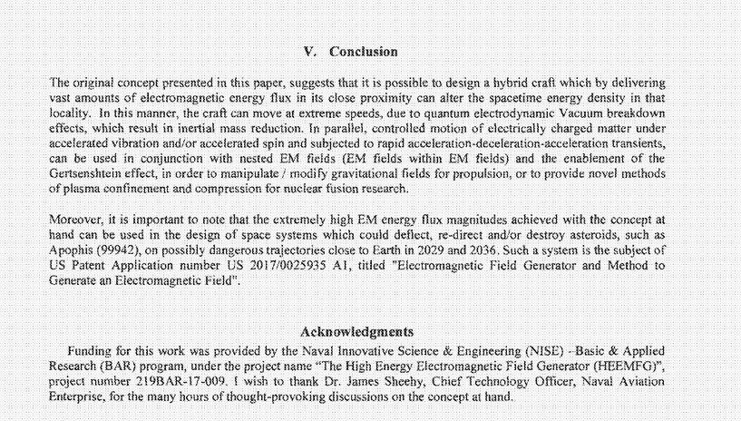
To the Stars Academy.
Interestingly enough, both Pais’ research and some of his patents also contain acknowledgments to the work of Dr. Harold E. Puthoff.
Dr. Harold E. Puthoff is the co-founder and Vice President of Science and Technology of To the Stars Academy.
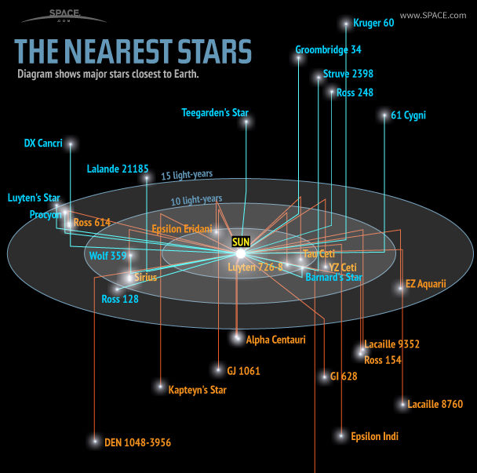
Dr. Harold E. Puthoff is an electrical engineer and inventor who has published research on polarized vacuums, but has also been extensively involved with paranormal and somewhat pseudoscientific topics such as remote viewing.
According to their website,
- TTSA’s goal is to advance “our current understanding of scientific phenomena and its technological implications.”
- The stated mission of TTSA’s Aerospace division is to find “revolutionary breakthroughs in propulsion, energy, and communication”.
- The company claims it is “currently working with lead engineers from major Department of Defense and aerospace companies with the capability to pursue an advanced engineering approach to fundamental aerospace topics.”
- This includes Space-Time Metrics Engineering (STME). (This is a theoretical concept in which quantum vacuums are engineered as a means of propulsion.)
It remains unclear how TTSA intends to follow through with and secure funding for these ambitious goals.

In a press release marking the official launch of TTSA on Oct. 11, 2017, former Program Director for Advanced Systems at Lockheed Martin Advanced Development Programs at the Skunk Works, Steve Justice, described how TTSA was working on developing revolutionary “Advanced Electromagnetic Vehicles”.
These are vehicles that will “dramatically reduce the current travel limits of distance and time” and “mimic the capabilities observed in unidentified aerial phenomenon by employing a drive system that alters the space-time metric.”
Without a doubt, these advanced electromagnetic vehicles that TTSA says it plans to develop sound uncannily like the electromagnetic hybrid aerospace underwater craft in Pais’s patent.
Few Answers, But Plenty Of Questions
NAWCAD has a liaison for pubic communication.
Kurt Larson is NAWCAD’s Public Affairs Director.
Larson states that…
"when it comes to patent applications, [NAWCAD] cannot provide any context outside of the filed patent application documents."
Similarly, USPTO policy states that applications for patents are not generally open to the public, and…
"no information concerning them is released except on written authority of the applicant, his or her assignee, or his or her attorney, or when necessary to the conduct of the business of the USPTO."
As striking as the similarity between the claimed capabilities of the hybrid craft and those of the objects described by Navy personnel, it’s still unknown whether these patents are related to the ongoing UFO revelations.
It is important to note that if the Navy had wanted this patent to remain classified, it could have filed the patent under the Invention Secrecy Act of 1951 (35 U.S.C. ch. 17).
This is a law which allows patents to remain classified if they might pose a possible threat to the national security of the United States.
Instead of doing that, however, all of Pais’ patents are currently fully available to the public.
If such a propulsion technology was so revolutionary and if the Navy indeed wanted to keep this technology out of others’ hands, it’s curious that they would choose to make the patent public.
Maybe the Navy is signaling to its adversaries that it, too, is aware of this revolutionary capability and to whom it belongs.
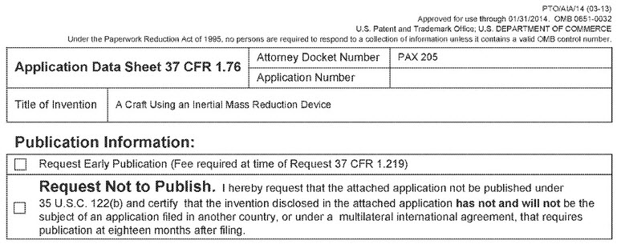
Also, consider the fact that Senators, including the vice chairman of the Senate Intelligence Community, have been briefed in recent weeks by Navy officials about the unexplained sightings Navy pilots have reported.
Even President Donald Trump recently stated in an interview that the Navy UFO reports could be due the fact that pilots
"see things a little bit different from the past,"
This is a comment which could be taken to mean that pilots are witnessing new types of aerospace technology for the first time.
Trump seemed to indicate that he does not believe the objects reported by Navy pilots are evidence of anything extraterrestrial. As such he took his interviewer’s UFO question in stride without any apparent surprise. This could be an indication of just how far into the mainstream the UFO discussion has become.
A Technology “UFO” Race
Consider as well the comments made by former Senate Majority Leader Harry Reid of Nevada, reportedly a key figure in securing funding for programs like the now-infamous Advanced Aerospace Threat Identification Program and its associated studies.
Earlier this year, Reid stated that the U.S., Russia, and China are currently in a “UFO race.”
We know the Chinese have already publicly made major strides in electromagnetic naval capabilities including railguns and aircraft catapults, as well as other highly advanced defense technologies.
Could Reid have meant that these three military powers are currently scrambling to be the first to master the technology behind a hybrid aerospace-undersea craft and deploy it on a substantial scale? If so, where does the Navy, and the Pentagon as a whole, currently stand in that clandestine race?
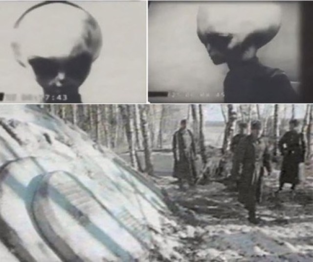
Furthermore, Pais notes in the paper that such a technology…
“would permit swift movement of the HAUC beyond our Solar System.”
Is this an undisclosed reason why we suddenly need a Space Force? Is this what Air Force Lieutenant General Vera Linn Jamieson was referring to last year when she casually dropped during an unrelated interview that in…
"different galaxies in the future we’re going to actually have capability that we have right now in the air”?
And this is hardly the only highly peculiar thing that Air Force leadership has spouted off about in regards to the future of America’s military footprint in space.
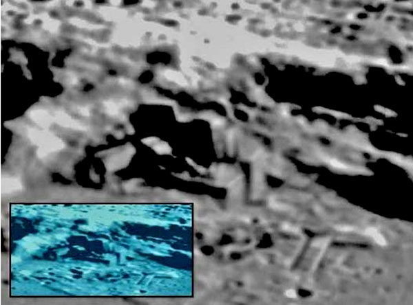
It’s also possible that this patent is just another facet of an information operation that goes along with a larger UFO narrative to promote the Pentagon’s undisclosed interests.
But…
But…
But the inclusion of China, a very terrestrial potential foe and America’s chief technological adversary, as a direct competitor when it comes to the technology seems odd and even counterproductive if that were the case.
On the other hand, some may say that this could be proof of two superpowers struggling to mimic the capabilities of something they are observing, but do not fully understand on a technological level. Considering all the unknowns, all possibilities are worth examining.
... some may say that this could be proof of two superpowers struggling to mimic the capabilities of something they are observing, but do not fully understand on a technological level.
Other thoughts on this…
Credits to the original Authors and links.
Much of this was inspired and compiled for the great work on The Drive;
- Scientist Behind The Navy’s “UFO Patents” Has…
- Navy’s Advanced Aerospace Tech Boss Claims Key ‘UFO …
- Docs Show Navy Got ‘UFO’ Patent Granted By …
Much of this work and investigation are being “bird dogged” by Brett Tingley and Tyler Rogoway. They are doing some great work. Now, of course, they know nothing of MAJestic or any thing related to it, so they are doing the necessary journalistic ground work with a healthy dose of skepticism. Well, good for them!
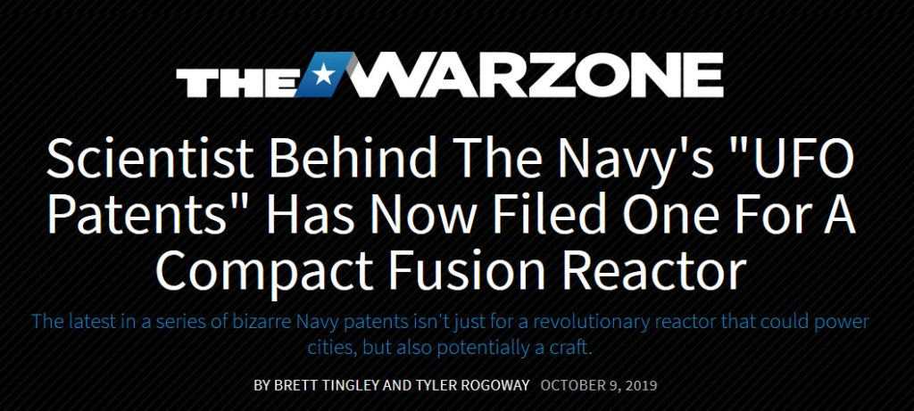
In any event, I would strongly advise the interested reader to follow their work and observe that the US Navy is making headway in the understanding and development of technologies that mimic that of our extraterrestrial benefactors.
Check out the patents yourself…
To view them for yourself, visithttps://portal.uspto.gov/pair/PublicPair and search for application number 15/141,270. Once there, click on the “Image File Wrapper” tab.
The Inventor speaks out
I hate it when other people get credit for work that you do. I know, it has happened to me, more than just a few times.
Comment or Message The article on patents held by the Navy make me feel angry because I have an unmet need for the US Government to acknowledge my patents on gravitomagnetic energy. https://patents.google.com/patent/US10177690B2/en I observe I also filed for a patent in China too. They denied the patent even though the US had already granted it. I feel suspicious that they stole my invention along with the US Navy. I have an outstanding FOIA request on this with the Navy. I have analyzed the Navy's Tic Tac UAP video to demonstrate spacetime metric engineering effects. I observe I have some research results I would like to share. Here's a report I conducted with correspondence with Dr. Hal Puthoff of TTSA. There's a few of the slides in the beginning that cover my background. http://www.calfree.com/TicTacUhtm.pptx Also I have several GIF files I created to share to show some of the UAP technology in action I would like to explain in more detail. It makes me feel happy to know your curious. I request you check out the following background information that goes with the PowerPoint presentation. I suggest you run the presentation software to operate the Gif on quantum tunneling; slide 7. My explanation of the presentation is in the form of a dialog. Where do slides 6-11 come from? Are they your research, or from Dr. Puthoff? Both? Somewhere else? Observe the information in slide 6 from Hal’s paper which I cite on the upper left of the slide. Spacetime metric engineering allows for altered spacetime. Basic hypothesis in altered spacetime: denser spacetime (g00 <1, |g11| > 1) time dilates, length shrinks “gravitational”, and, expanded spacetime (g00 > 1, |g11| <1) time shrinks, length dilates “antigravitational”. Observe slide 7 explains how quantum entanglement [quantum tunneling] works and its possible to move information through spacetime instantaneously. I feel this is useful to explaining the concept of wormholes. Observe slide 8 explains the concept of gravitational frame dragging using nano-bump [empirical] data from the mass spin-valve device. My invention is called the mass spin-valve or gravitational rectifier, aka gravity diode. Observe slide 9 explains using nano-bump [empirical] data from the mass spin-valve device to support the creation of denser spacetime (g00 <1, |g11| > 1) time dilates, length shrinks “gravitational” energy at the nano-scale. Observe slide 10 explains using nano-pit [empirical] data from the mass spin-valve device to support the creation of expanded spacetime (g00 > 1, |g11| <1) time shrinks, length dilates “antigravitational” energy at the nano-scale. Observe slide 11 explains that utilizing data from variable area nano-bumps and nano-pits we are able to show that moving objects at the nano-scale produce parabolic pull force of nano-gravity and hyperbolic push force of nano-antigravity [like a balloon]. The term 'antigravity bubble', I'm not quite sure what that is -- how it operates or what it looks like. So, when you mention balloons (i.e. 'a dark torus shaped balloon', 'A balloon shaped brighter region', or 'small dark oval shaped balloon') -- are you saying 'balloon' because they appear balloon-shaped? That is to say -- they aren't physical balloons travelling alongside the craft? Observe denser spacetime (g00 <1, |g11| > 1) force magnitude of gravity |g11| is greater than 1 G force and anti-gravity force is less than 1 G, and, expanded spacetime (g00 > 1, |g11| <1) force magnitude of gravity |g11| is less than 1 G force and anti-gravity force is greater than 1 G. I hope this helps your understanding of slide 6. Greater G force means time dilates, length shrinks “gravitational” energy while lower G force means time shrinks, length dilates “anti-gravitational” energy. This is based on principals of General Relativity, Einstein's theory of geometric gravitation and the data. http://www.calfree.com/TicTacSpacetimeMetricEngineering.gif No, [not a real balloon] the dark balloon shaped region over the top of the UAP appears to be a region of expanded spacetime. The other balloon shaped regions on the right of the UAP are also regions of altered spacetime used to open a wormhole on the left of the UAP. These regions appear to be utilized to create gravitational winding spring like force that propels the craft to the left at the entrance to the wormhole. Empirical evidence is from slides 7-11. This second GIF includes this first one above. Above the UAP is the anti-gravity balloon I explain in slide 11. The left of the image is where a worm hole is opened and the right side is where the UAP is spacetime engineering a gravitational bow, like in a bow and arrow, where the UAP is the arrow. This second GIF shows the arrow being released; aka warp drive. http://www.calfree.com/TicTacWarpDrive.gif This third GIF shows something I felt was pretty cool. It appears the UAP as hitting the Nimitz aircraft with an EMP pulse which saturates the IR detector array. http://www.calfree.com/TicTacEMPattack.gif Are you suggesting that the Air Force acted aggressively towards the UAP -- possibly hitting it with some type of hypersonic weapon? -- 'These slides make me feel uncomfortable. I have an unmet need for reassurance of future nonviolent interaction with UAPs. I request the support for further failure analysis and for development of protocols for remedial measures.' My experience as an Archaeologist necessitates me to intercommunicate with native Americans about their culture. This requires a feeling of trust be established so I don’t go where I am not invited. The UAP appears to be hitting the Nimitz aircraft with an electromagnetic pulse that charged the IR detector array fanout on the back of the array causing it to saturate. The image observed shows the fanout behind the array in that frame. I don’t know what the Nimitz aircraft did to the UAP that would be considered hostile by the UAP. Michael Boyd (408) 891-9677 PS the GIFs are mine so feel free to use them.
MAJestic Related Posts – Training
These are posts and articles that revolve around how I was recruited for MAJestic and my training. Also discussed is the nature of secret programs. I really do not know why the organization was kept so secret. It really wasn’t because of any kind of military concern, and the technologies were way too involved for any kind of information transfer. The only conclusion that I can come to is that we were obligated to maintain secrecy at the behalf of our extraterrestrial benefactors.
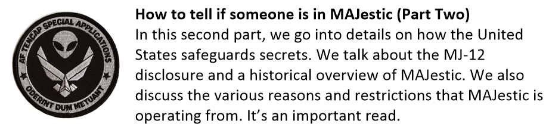
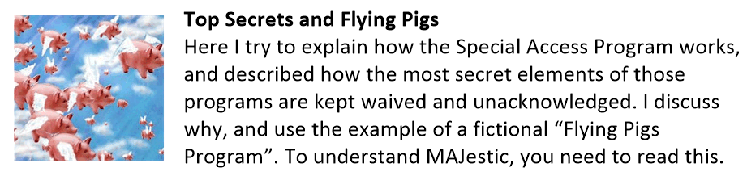
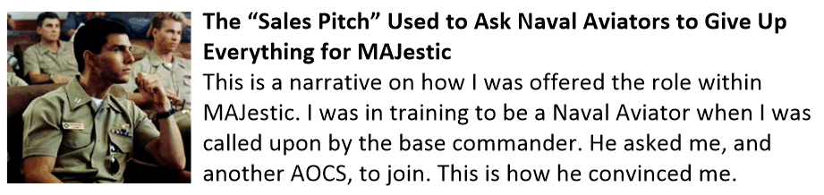
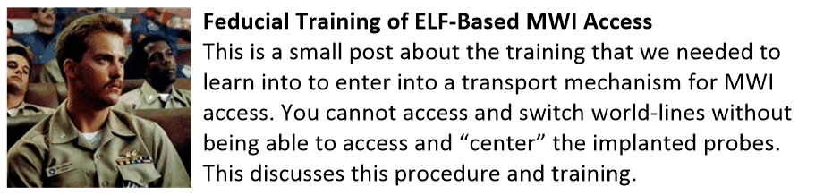
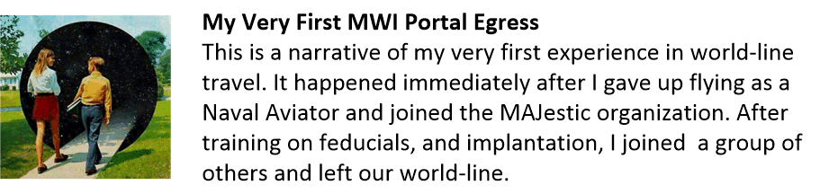
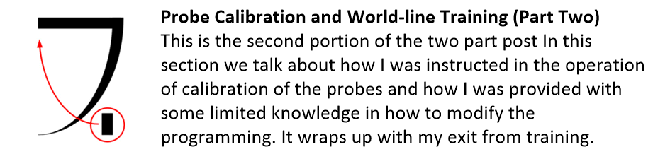
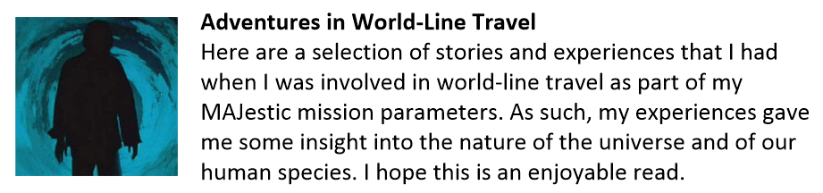
MAJestic Related Posts – Our Universe
These particular posts are concerned about the universe that we are all part of. Being entangled as I was, and involved in the crazy things that I was, I was given some insight. This insight wasn’t anything super special. Rather it offered me perception along with advantage. Here, I try to impart some of that knowledge through discussion.
Enjoy.
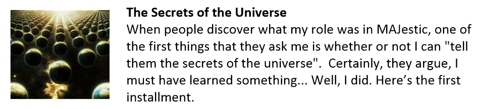
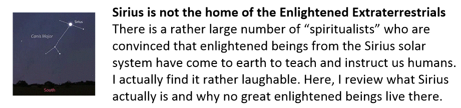
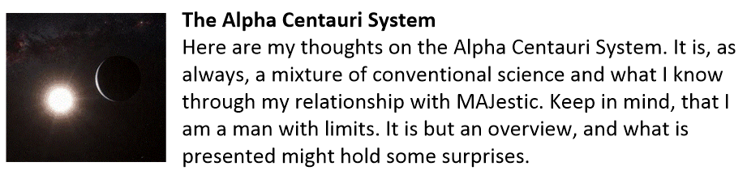
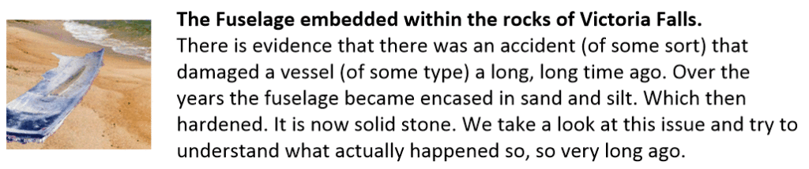
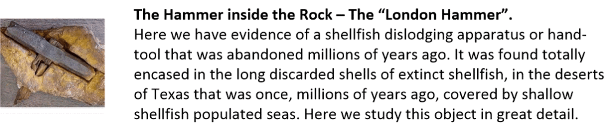
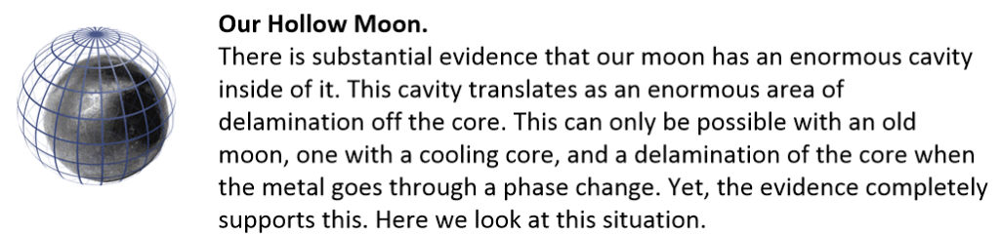
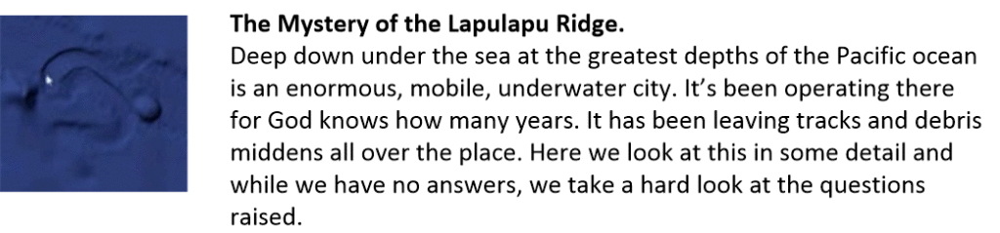
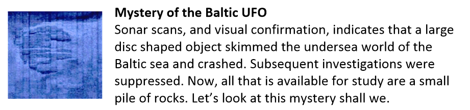
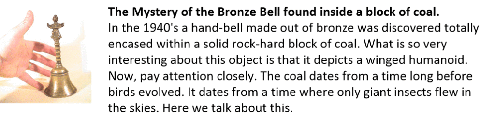
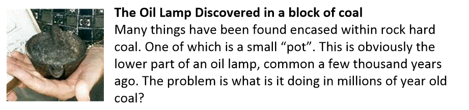
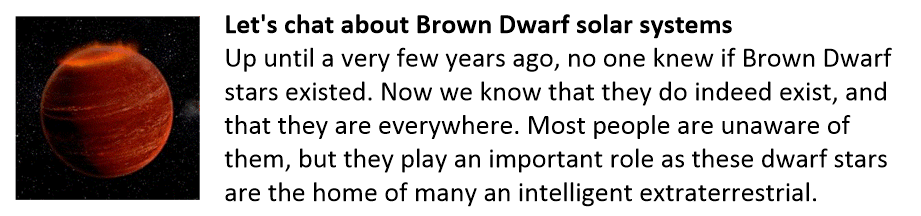
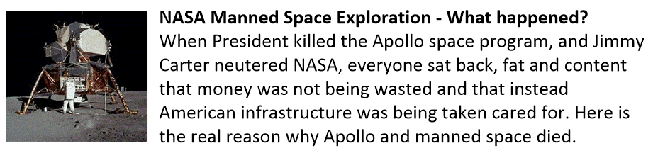
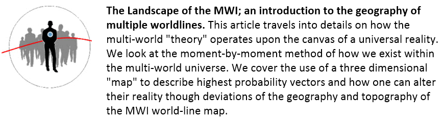
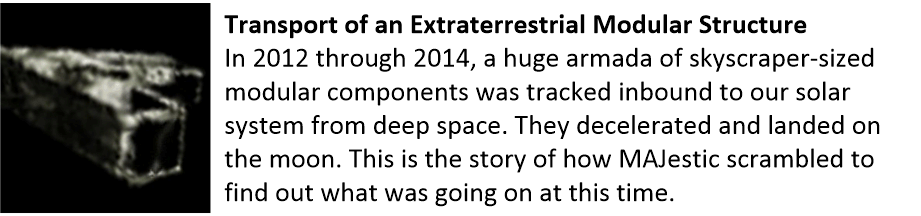
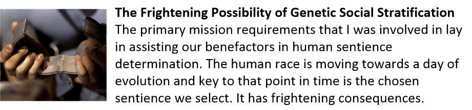
![The Progenitors as remote viewed by Joseph McMoneagle.
Joseph McMoneagle, one of the most successful Army-trained remote viewers, peered into the past to look into the possible origins of human history. To everyone’s surprise, he “saw” something quite different from the evolution of intelligent apes. Instead we observed that we were fabricated. We were cultivated and our DNA were created by intelligent beings in what he called a ‘laboratory.’ These intelligent beings are quite different from most of the creatures that zoom about the earth and watch and monitor us from afar. These are our “creators”. As such, they are known as the “progenitors”.](../assets/img/very-interesting-patents-are-coming-out-from-the-united-states-navy-and-492021/1-22.gif)
Utilizing Intention
Influencer Questions
Here are posts that have gathered a series of questions from various influencers. They are interesting in many ways and could help all of us unravel the mysteries of the lives that we live.
MAJestic Related Posts – World-Line Travel
These posts are related to “reality slides”. Other more common terms are “world-line travel”, or the MWI. What people fail to grasp is that when a person has the ability to slide into a different reality (pass into a different world-line), they are able to “touch” Heaven to some extent. Here are posts that cover this topic.
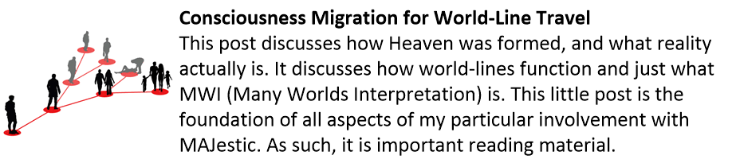
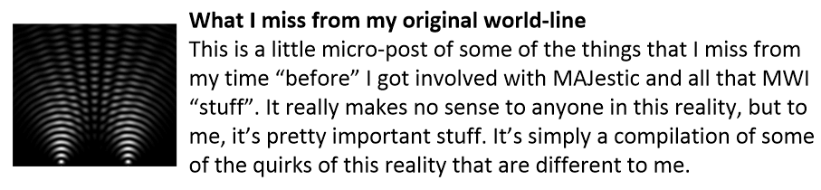
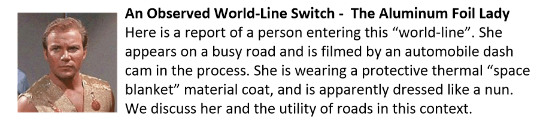
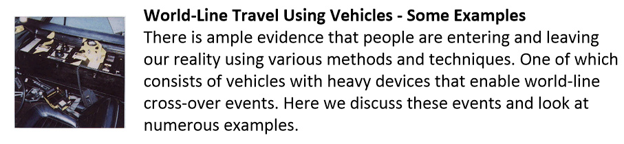
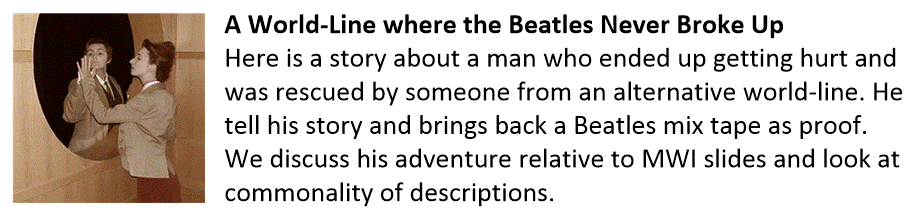
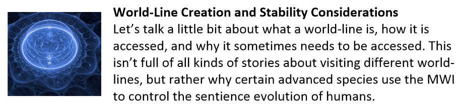
John Titor Related Posts
Another person, collectively known by the identity of “John Titor” claimed to utilize world-line (MWI egress) travel to collect artifacts from the past. He is an interesting subject to discuss. Here we have multiple posts in this regard.
They are;
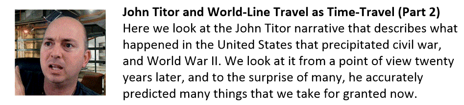
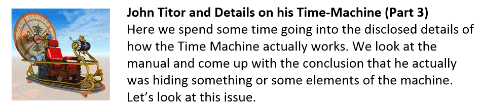